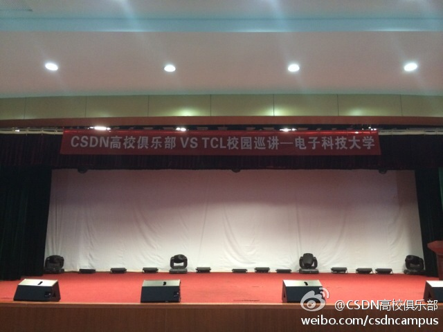
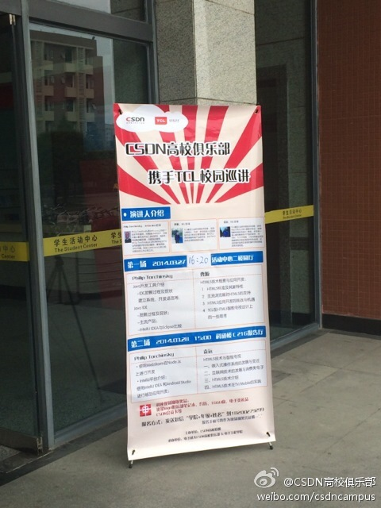
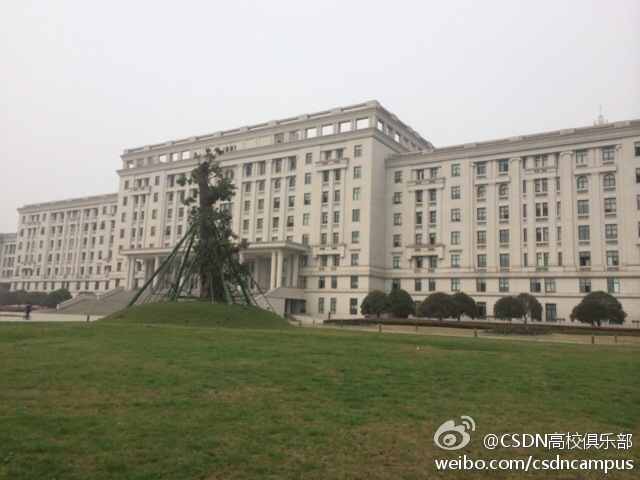
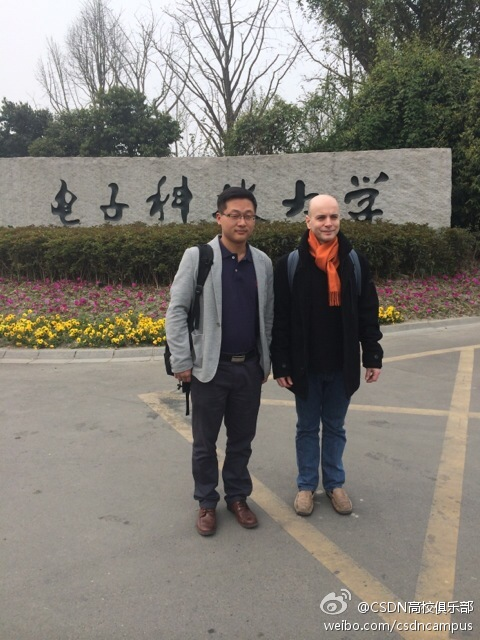

太精辟的时代幽默。@周金桥:这道小学语文题太难了：关联词填空： 他（ ）牺牲生命，（ ）出卖组织。 60后说应填“宁可…也不…”。 70后说应填“害怕…所以…”。 80后说应填“与其…不如…”。 …… 90后说应填“宁可…也要…” 00后说应填“白白…忘了…”
90后新填空“虽然已经”，“但被认为” -> //@比尔盖子V: “虽然已经”，“但被认为”@周金桥:这道小学语文题太难了：关联词填空： 他（ ）牺牲生命，（ ）出卖组织。 60后说应填“宁可…也不…”。 70后说应填“害怕…所以…”。 80后说应填“与其…不如…”。 …… 90后说应填“宁可…也要…” 00后说应填“白白…忘了…”
看到一个创业项目，是用数据分析从各个社交媒体上找出各行业的“意见领袖”来。其实要我说，“意见领袖”这事儿比较新，用人脑去找，目前尚且没有定论和规则，用数据分析就能找出来么？数据分析最终干的还是把人脑智慧提炼出机器可以理解的语言。
图中那位外国友人Philip 是以前Sun的同事，当时任Solaris Evangelist, 目前在JetBrains任技术推广经理。圈子真是不大。@CSDN高校俱乐部:电子科技大学校园巡讲4：20开始，为大家同步直播。 
回复@qyjohn_:看来无论中外，大家还是喜欢扎堆。 //@qyjohn_:这个组的Lead是Robert Demmer，当时是Sun的NetBeans Evangelist。 //@Ada李力:图中那位外国友人Philip 是以前Sun的同事，当时任Solaris Evangelist, 目前在JetBrains任技术推广经理。圈子真是不大。@CSDN高校俱乐部:电子科技大学校园巡讲4：20开始，为大家同步直播。
Eich出任Mozillla CEO这则新闻, 我关注的重点是：Eich將开发Firefox OS的@宫力（Li Gong）提任為Mozilla COO。Eich曾表示Firefox OS是他的首选，他的目标是尽可能的讓更多消费者使用火狐系統手機，特别是25美元的產品。－ Brendan Eich：微软、苹果及谷歌都是相互竞争的盟友 网页链接
//@qyjohn_: 祝贺宫力博士。//@yuwang881: 祝贺宫力！现在还能回想起当年在JavaOne做Key Notes演讲，宫力用中文开场的情景：“大家好，我是宫力”！ //@宫力:谢谢支持和鼓励！@新浪科技:【Mozilla宣布新的CEO和COO任命】Mozilla联合创始人和现任CTO Brendan Eich被任命为CEO。宫力被任命为COO，将管理包括云服务，IT，Marketplace，移动和研究以及平台开发等部门。Mitchell Baker仍将担任Mozilla执行主席。网页链接